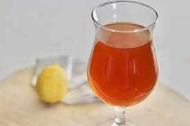

Black Tea Lemonade

Description
A very strong, sweet black tea and lemonade mix is sweetened
and chilled to make a refreshing summer drink.
Ingredients
- 5 cups water
- ½ cup white sugar
- 3 orange pekoe tea bags
- 1 (12 ounce) can frozen lemonade concentrate
- 5 cups water
Directions
- Bring 5 cups of water and the sugar to a boil in a saucepan, then remove from the heat and add the tea bags.
- Allow tea to steep while you mix the lemonade concentrate and remaining water in a large pitcher.
- Pour the tea mixture into the lemonade, discarding tea bags.
- Stir and refrigerate until cold before serving.